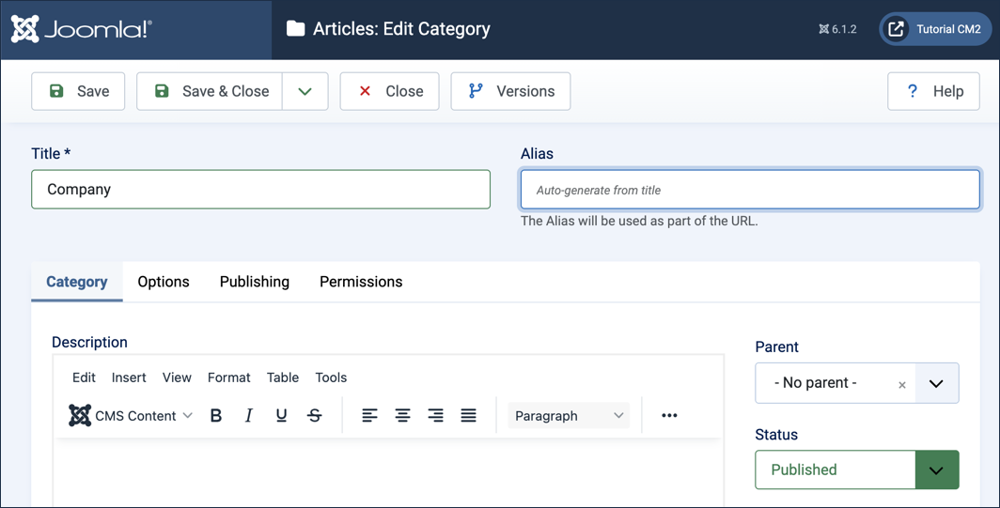
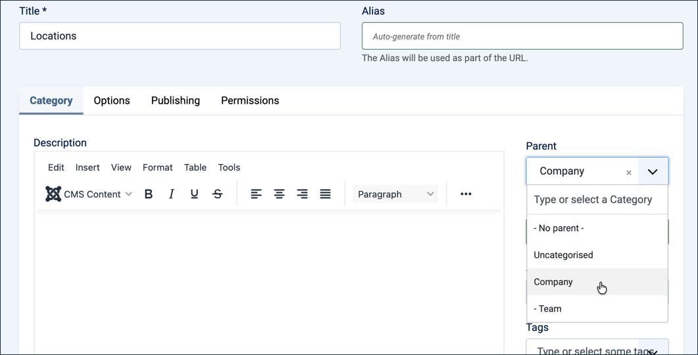
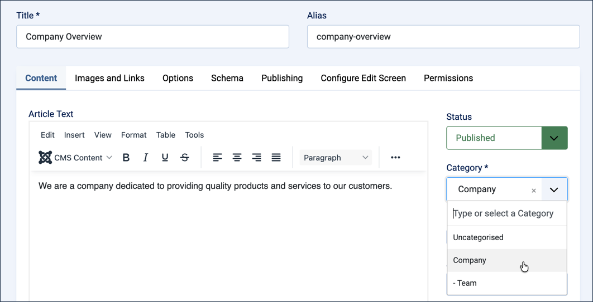
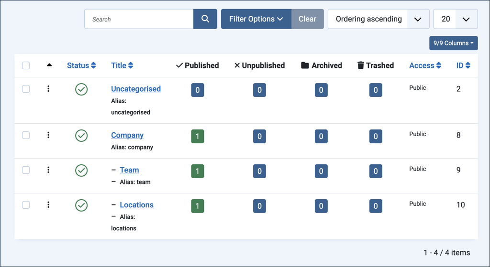

Joomla organises web content by a category hierarchy. Categories are like outlines, giving structure and organisation to web content. Each article is associated with a single category or sub-category. Menu elements then leverage categories to easily create lists of articles, blogs, and more. This tutorial describes how to create a category with two sub-categories, then organise both an existing article and some new ones within that structure.
2.1 Article & Menu Item creates the Company Overview article we'll assign to a category in this tutorial.
Steps
Create Categories
Log in to Joomla backend and navigate to the Home Dashboard.
In the Administrator Menu, click Content > Categories.
Click New. Result: A new-category form appears.
Title:Company

The new-category form filled in for Company
Click Save & Close. Result: The categories list returns with Company added.
Add a sub-category. Click New again.
Title:Team
Parent:Company
Click Save & New. Result: The category is saved, and a fresh new-category form appears.
Title:Locations
Parent:Company

Setting the Parent field to Company for the Locations sub-category
Click Save & Close. Result: The categories list returns with Team and Locations added as sub-categories of Company.
Assign an Article to a Category
Categories are just as useful for organising articles you've already written as they are for new ones. Here we'll move the Company Overview article from 2.1 into the Company category.
In the Administrator Menu, click Content > Articles.
Click Company Overview to open it for editing.
Set the Category field to Company.

Assigning Company Overview to the Company category
Click Save & Close. Result:Company Overview now appears in the Company category.
Add Articles to the Sub-categories
An empty sub-category doesn't show you much. Let's put one article in each so there's something to see.
Click New. Result: A new-article form appears.
Title:Meet the Team
Category:Team
Article Text:Our team brings together experienced professionals from across the industry, united by a shared commitment to quality.
Click Save & New.
Title:Our Locations
Category:Locations
Article Text:We operate offices in multiple cities, each staffed by local experts ready to help.
Click Save & Close.

Company, Team, and Locations, each now holding one article
We now have a small but real structure: the Company category holds Company Overview, and its two sub-categories each hold an article of their own. In 2.3 Category Menu Item, we'll create menu items that put this structure to work, so visitors can browse it on the frontend.
Concepts
Articles are organised by categories in Joomla, giving structure to your website, making them easier to find and assisting in navigation.
Sub-categories may have sub-categories.
An article can be assigned to a category at any time, whether when it's first created or afterward by editing it.